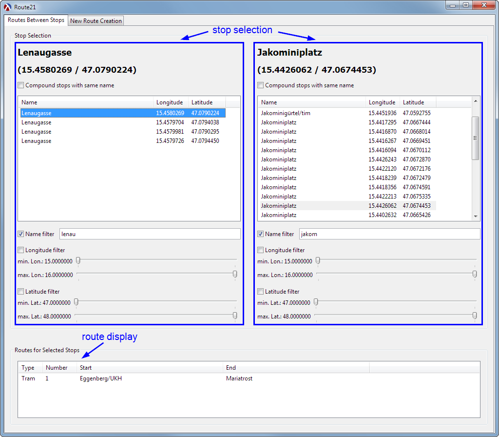

Display of Routes Between Stops
| (require "info-panel.rkt") | package: base |

1 Info Panel
All work is done by a dedicated info-panel% class.
|
superclass: vertical-panel% |
groups its children by a labelled group box
arranges two compound-stop-selector%s side-by-side
displays the common routes between the selected stops in a route-display% at the bottom
<info-panel%> ::=
(define info-panel% (class vertical-panel% (init parent provider) (super-new [parent parent]) (define stops (send provider stops)) (define selection-group-panel (new group-box-panel% [parent this] [label "Stop Selection"] [border 10])) <compound-stop-selector-placement> <route-display-placement> <calculation-of-displayed-routes> (send provider add-callback display-routes)))
1.1 Compound Stop Selector Placement
horizontal panel with a dummy spacer panel in between
(panel margin would also work to the ’outside’, which we don’t want)
(define selection-panel (new horizontal-panel% [parent selection-group-panel])) (define selector1 (new compound-stop-selector% [initial-stops stops] [parent selection-panel] [selection-id 'stop1] [callback (lambda (id new-stop) (display-routes))] [focus #t])) (new panel% [parent selection-panel] [min-width 30] [stretchable-width #f]) (define selector2 (new compound-stop-selector% [initial-stops stops] [parent selection-panel] [selection-id 'stop2] [callback (lambda (id new-stop) (display-routes))] [focus #f]))
(new panel% [parent this] [min-height 30] [stretchable-height #f]) (define route-display-panel (new group-box-panel% [parent this] [label "Routes for Selected Stops"] [border 10])) (define route-display (new route-display% [parent route-display-panel]))
1.2 Calculation of Displayed Routes
get selected compound stops
get routes for pairwise combination of single constituent stops
(define (display-routes) (send route-display show-routes null) (let ([compound-stop1 (send selector1 get-selected-stop)] [compound-stop2 (send selector2 get-selected-stop)]) (when (and (and compound-stop1 compound-stop2) (not (equal? compound-stop1 compound-stop2))) (let* ([stops1 (constituents compound-stop1)] [stops2 (constituents compound-stop2)] [routes (routes-for-all-stop-pairs provider stops1 stops2)]) (send route-display show-routes routes)))))
2 Code Structure
<*> ::=
<requires> <info-panel%> (provide info-panel%)
2.1 Required Imports
<requires> ::=